1/ Dans l'élevage Amour Korat
Janvier 2013 : une chatte Amour Korat pure race va mettre bas. Elle allant humer l'air et le bonhomme de neige dimanche 20 janvier.

Les petits sont nés. La fratrie se porte bien à une semaine. Chacun réagit bien. Les parents Korat sont très attentionnés.
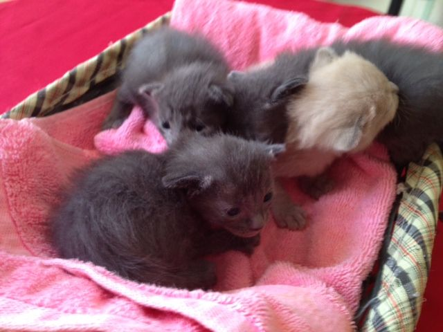

Un petit film d'un chaton isolé une minute pas du tout content de ça !
En ce jour de Saint Valentin, la portée a maintenant 15 jours. Voici une photo valentine d'un des chatons Korat.

Ils grandissent…

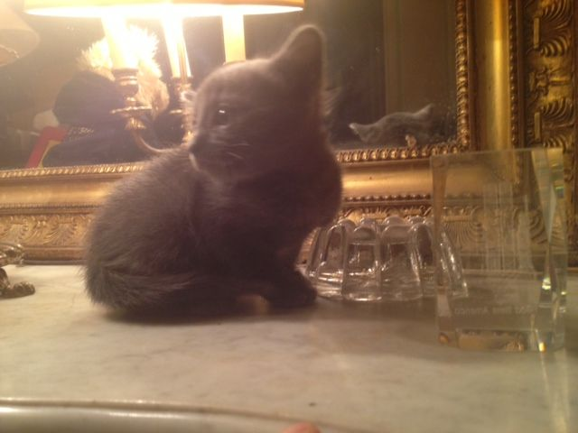

Voici les parents, émérites, investis tous les deux, à ne pas oublier…

Un mois…
Voici une petite vidéo de la fratrie. Ils sont habitués aux humains et, s'ils ne les craignent pas, ils ne les recherchent pas encore. Cela viendra d'ici quelques semaines. En attendant de découvrir les joies des complicités humain/korat par mimétisme de leurs parents qui n'en ont jamais assez, ces chères petites têtes grandissent tranquillement un peu plus chaque jour à découvrir le monde…
Quelques autres vidéos au fil de l'évolution de la portée…
Les chatons debout sont maintenant aussi grands que leurs parents assis.
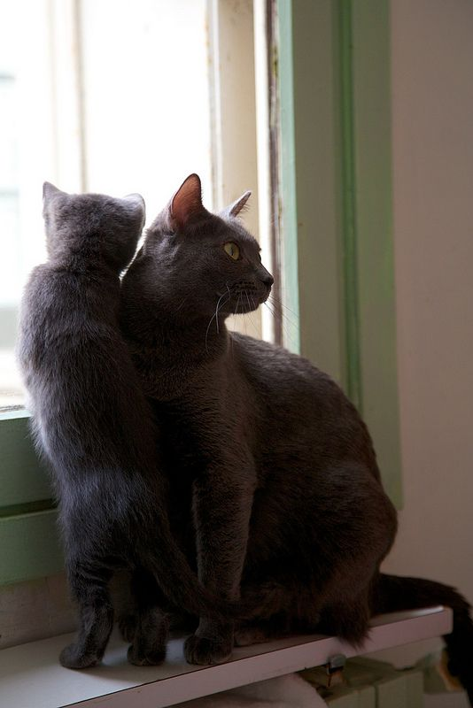
Apprentissage du harnais…


Leur aire de jeux, entre ombres et lumières…
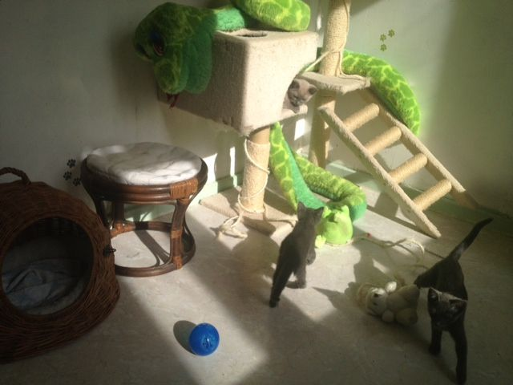
2/ Après les adoptions…
Merci aux heureux propriétaires pour les photos/films en retour…
Icare (Paris)
Icare est allé rejoindre Hermès.
Cliquez sur cette ligne pour voir la portée d'Hermès.
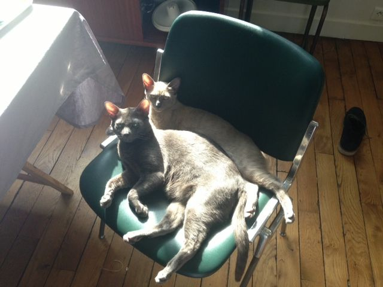

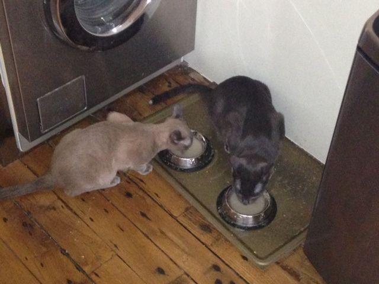
Ilys
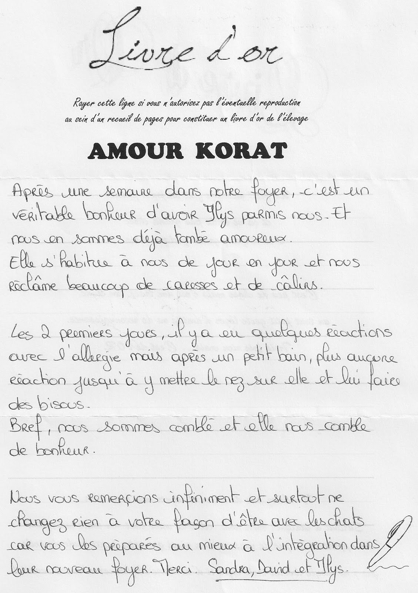
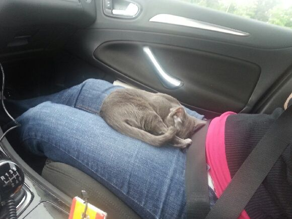
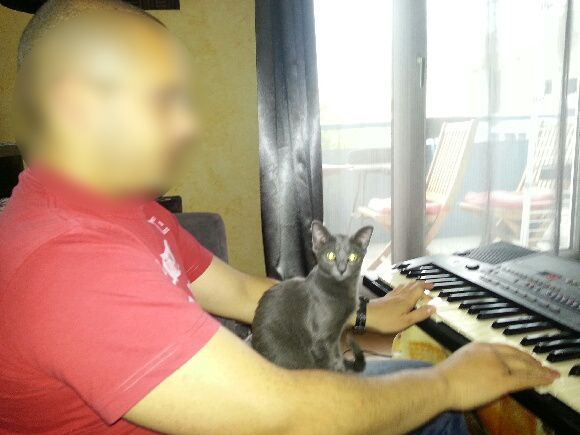
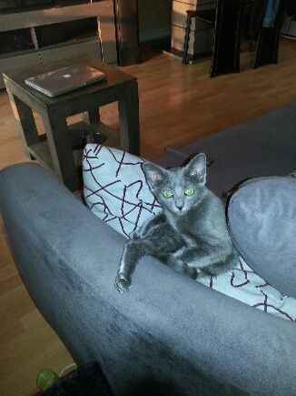
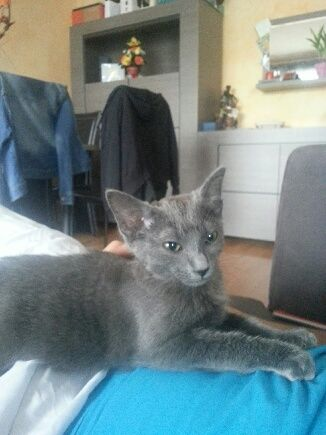
Inox
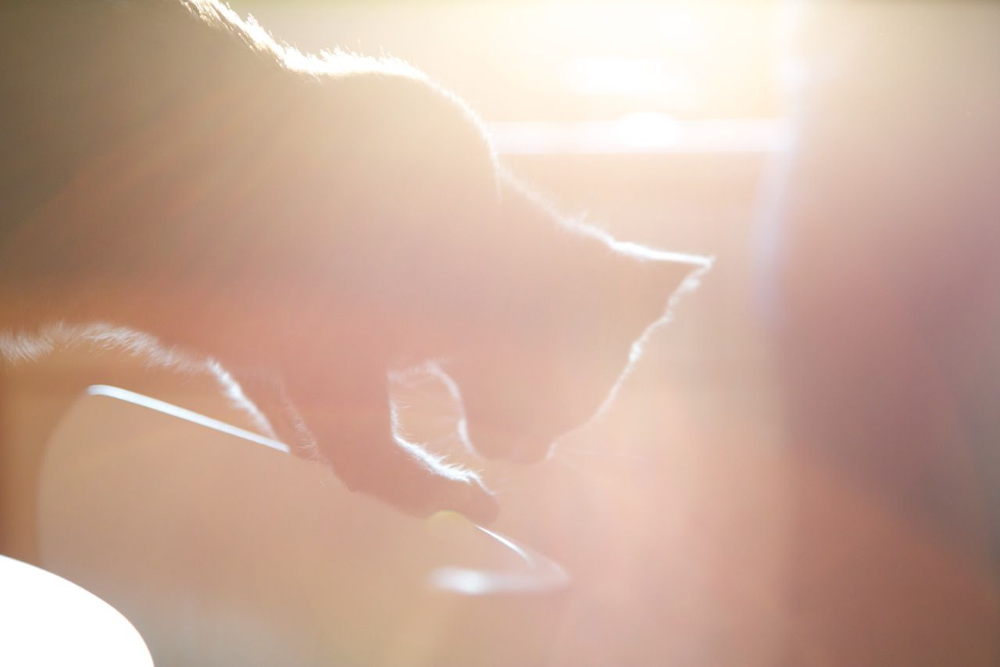

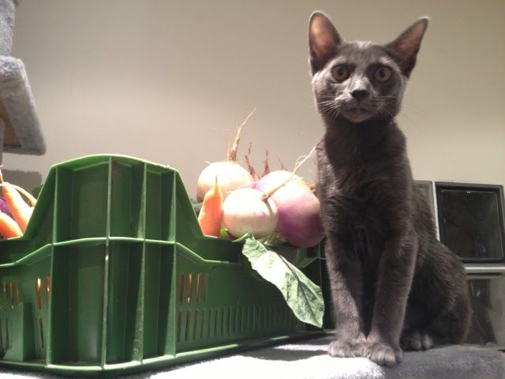
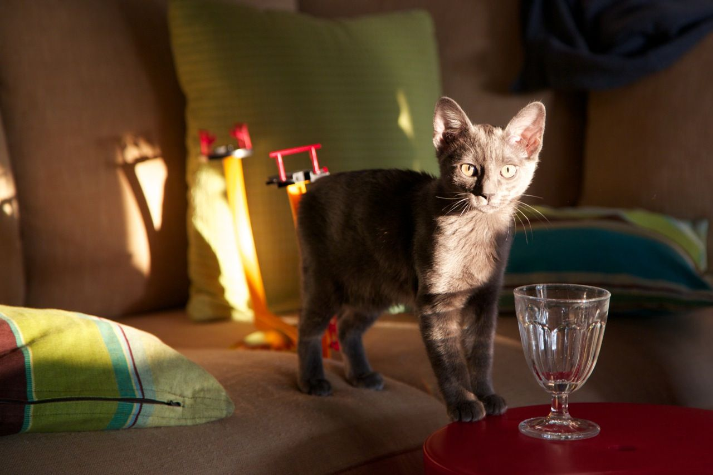


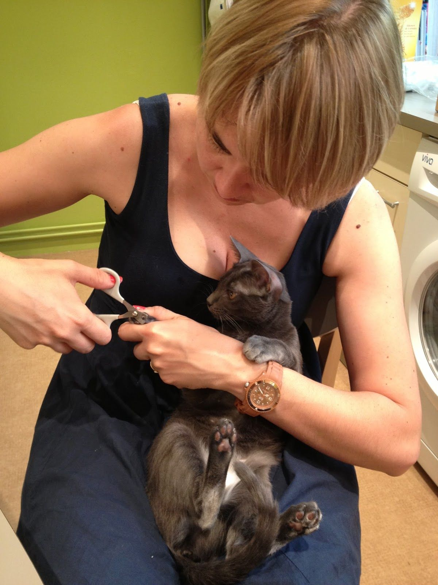
Clic ici pour accéder à la suite d'Inox d'Amour Korat en librairie…
Ivy
Ile de Ré
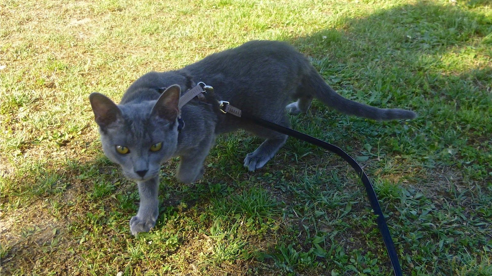
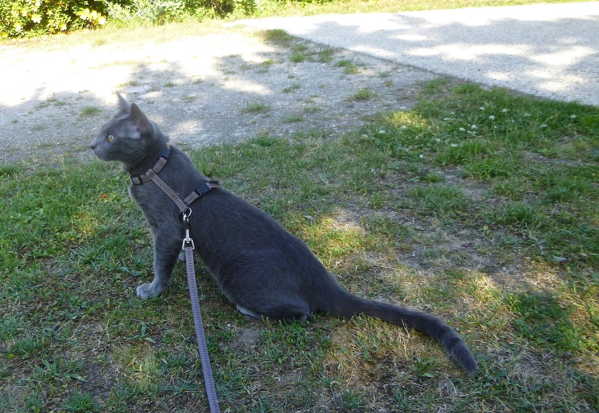
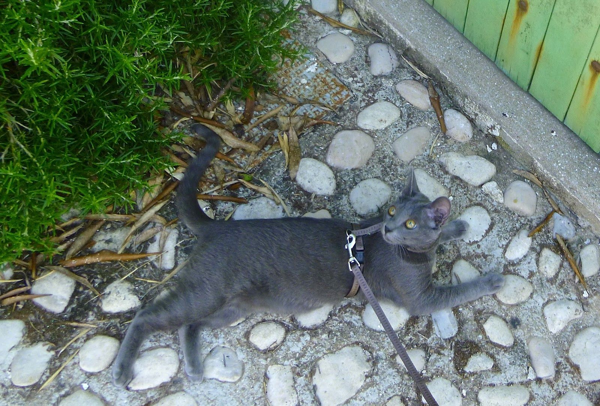
Allemagne
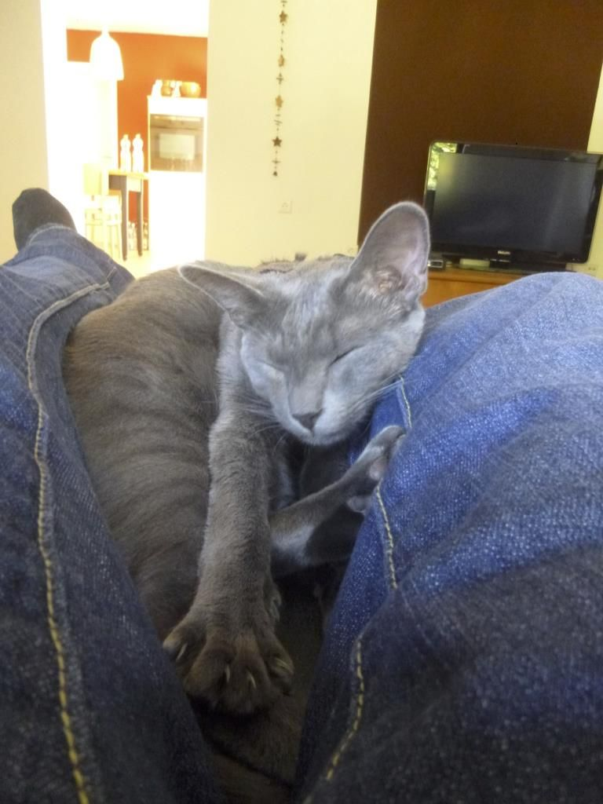
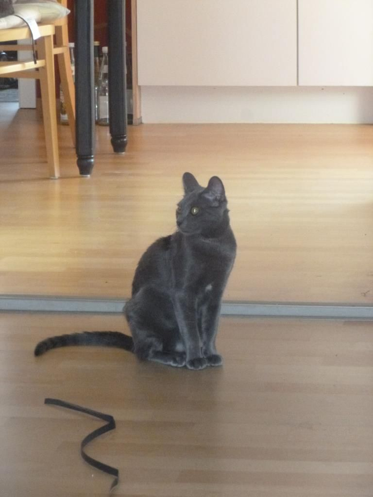
Paris

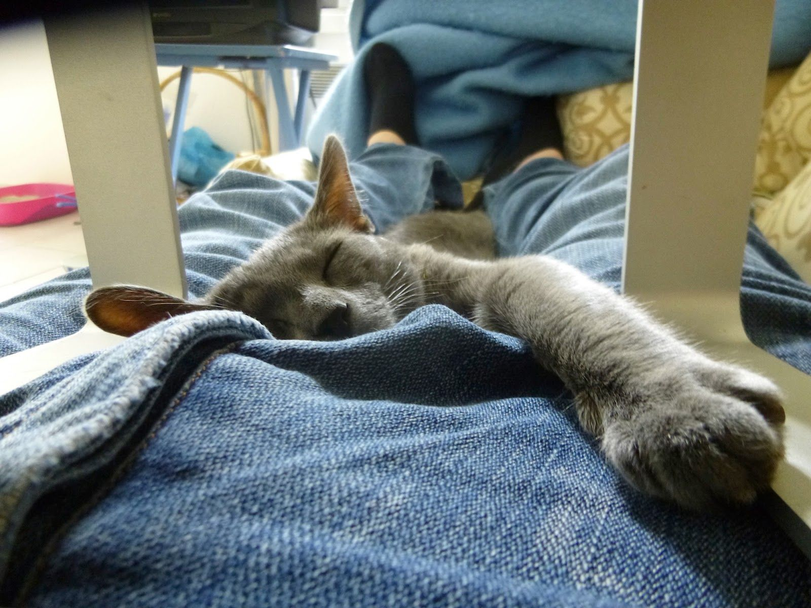